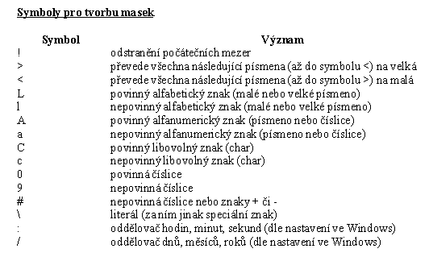
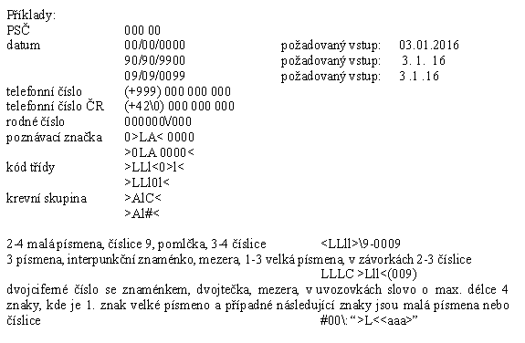

VÝJIMKY
Chyby, na které upozorní překladač,
nejsou jediné, které mohou v programu nastat. Daleko horší
jsou chyby, které překladač nemůže odhalit, protože vznikají
až za běhu programu a kterým říkáme run-time chyby (nebo běhové
chyby). V okamžiku, kdy tato chyba vznikne, přeruší běh
programu a dojde ke ztrátě dat. Jakmile tušíme, že by se v daném
úseku programového kódu mohla taková chyba vyskytnout, je nutné
všechny možnosti správně ošetřit.
Př. procedura bez jakéhokoliv ošetření chyb:
var a, b, x: integer;
begin
a:=0; b:=0;
x:=a div b; //zde určitě
vznikne run-time chyba
ShowMessage (IntToStr(x));
end.
Př. tradiční ošetření chyb:
var a, b, x: integer;
begin
a:=0; b:=0;
if b<>0
then
begin
x:=a div b;
ShowMessage (IntToStr(x));
end else MessageDlg(´Dělení
nulou!´, mtError, [mbOk],
0);
end.
Mechanismus výjimek
Mechanismus výjimek je postaven na
čtyřech klíčových slovech:
try –
označuje začátek tzv. chráněného bloku, tj. bloku, ve kterém
se očekává vznik výjimky a který se má zkusit provést
except – označuje konec
chráněného bloku a uvádí příkazy pro obsluhu výjimek:
finally – blok je proveden
vždy, ať k výjimce dojde nebo ne. Používá se např.
k uvolnění zdrojů alokovaných v bloku try předtím,
než je obsloužena výjimka.
raise – příkaz používaný
k ručnímu vyvolání výjimky
Př. ošetření chyb pomocí mechanismu výjimek:
var a, b, x: integer;
begin
a:=0; b:=0;
try
x:=a div b;
Form1.Caption:=´Nazdar´;
ShowMessage (IntToStr(x));
except
on EDivByZero do
MessageDlg(´Dělení nulou!´, mtError, [mbOk],
0);
end;
end.
Dojde-li k výjimce,
hledá se tzv. handler (ovladač výjimky), který výjimku ošetří.
Po ošetření výjimky program pokračuje kódem následujícím po
kódu handleru, a nikoliv kódem následujícím po kódu, který
způsobil výjimku. Proto pokud způsobí výjimku např. první
řádek v sekci try, už se neprovedou zbývající řádky
v této sekci.
Pokud chceme provést
nějakou činnost v případě výjimky i v případě
bezchybného provedení sekce try, použijeme sekci finally.
Př. použití bloku finally:
var a, b, x: integer;
begin
a:=0; b:=0;
try
x:=a div b;
ShowMessage (IntToStr(x));
finally
Form1.Caption:=´Nazdar´;
end;
end.
Při použití sekce
finally místo sekce except zase není ošetřena vlastní výjimka.
Takže nezbývá nic jiného než zkombinovat finally a except blok.
Jedná se vlastně o zanoření dvou bloků.
Př. kombinace sekcí finally a except:
var a, b, x: integer;
begin
a:=0; b:=0;
try
try
x:=a div b;
ShowMessage (IntToStr(x));
except
on EDivByZero do
MessageDlg(´Dělení nulou!´, mtError, [mbOk],
0);
end;
finally
Form1.Caption:=´Nazdar´;
end;
end.
Blok except
Přesná syntaxe
bloku except:
try
nebezpečné
příkazy
except
on typ očekávané
výjimky do ošetření výjimky
on typ očekávané
výjimky do ošetření výjimky
.....
else ošetření
jiné (neočekávané) výjimky
end;
V sekci else je možné
ošetřit jakoukoliv výjimku, i tu, kterou jsme neočekávali a tedy
nezařadili do výčtu on … do. Zpravidla je ale lepší nechat
ošetření neznámé výjimky na implicitním handleru Delphi. Platí
pravidlo, že buď výjimku identifikujeme a ošetříme, nebo ji
necháme bez povšimnutí ošetřit Delphi.
Výjimka může být
ošetřena v sekci do i více než jedním příkazem, tyto příkazy
jsou pak standardně uvozeny klíčovými slovy begin a end.
Některé typy výjimek
Typ výjimky
popis chyby
EAbort
tzv. tichá výjimka, která nevypisuje chybové hlášení a o
jejíž existenci se uživatel nedozví
EAccessViolation
nepovolený přístup do paměti
EConvertError
chyba při provádění konverze (např. při použití funkce
StrToInt, StrToFloat)
EDivByZero
celočíselné dělení nulou
ERangeError
celočíselná hodnota mimo přípustný rozsah
EIntOverflow
přetečení celočíselné operace, výsledek se nevejde do
alokované oblasti
EInOutError
vstupně/výstupní chyba, všeobecná výjimka pro chyby souborů
EInvalidPointer
neplatná operace s ukazateli
EOutOfMemory
neúspěšný pokus o alokaci paměti
EWin23Error
třída pro chyby Windows
EZeroDivide
dělení nulou v pohyblivé řádové čárce (reálných
čísel)
EOverflow
přetečení v pohyblivé řádové čárce
EUnderFlow
podtečení v pohyblivé řádové čárce
EInvalidOp
nedefinovaná instrukce v aritmetice reálných čísel
MASKEDIT – EDITAČNÍ
POLE S MASKOU
Slouží ke vstupu
jedné řádky textu s kontrolou vstupních dat. Lze využít i
pro formátování výstupu (zobrazení v požadovaném
formátu). Základem je tzv. maska, která obsahuje předpis, jak
data mají vypadat.
Vlastnosti
Vlastnost
popis a použití
EditMask
slouží k zadání masky představující omezení vstupních dat
pomocí Input Mask Editoru
Text
vlastní text (zadaný uživatelem)
EditText
maskou formátovaný text tak, jak jej vidí uživatel
MaxLength
maximální délka textu; automaticky se upravuje podle nastavení
masky
IsMasked
umožňuje testovat, zda maska byla definována
Ostatní vlastnosti a události jsou
stejné jako u komponenty Edit.
Masku obvykle
nevpisujeme přímo jako řetězec do vlastnosti EditMask, ale
vytváříme pomocí Input Mask Editoru vyvolaného přes tuto
vlastnost. Maska se skládá ze tří částí oddělených
středníkem. První část obsahuje samotnou masku skládající se
ze symbolů pro tvorbu masek. Druhá část určuje, zda se znaky
masky budou ukládat společně se zadanými. Toto nastavení se týká
pouze vlastnosti Text, neboť u vlastnosti EditText jsou znaky masky
ukládány vždy. Pokud chceme ukládat pouze znaky zadané
uživatelem, vložíme hodnotu 0, pokud i znaky masky, vložíme 1.
Tuto hodnotu můžeme nastavit i pomocí položky Save Literal
Characters v Input Mask Editoru. Třetí část masky říká,
který znak bude v MaskEditu zobrazován jako místo určené
pro vstup (standardně podtržítko). Znak je možné zadat i do
položky Charakter for Blanks. Položka Test Input zobrazuje, jak
bude editační pole vidět uživatel. Input Mask Editor obsahuje i
některé jednoduché předdefinované masky v seznamu Sample
Masks, ty ale většinou neodpovídají českým národním
zvyklostem.

Pokud uživatel
opustí editační pole v okamžiku, kdy zadání neodpovídá
masce, je generována výjimka EDBEditError. Stiskem klávesy Esc je
možné zrušit nesprávné zadání a údaje opravit či doplnit.
Příklady:
